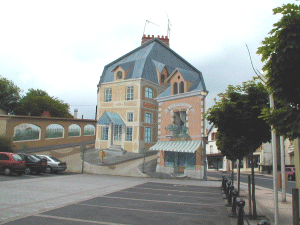

|

|
Il n'y a plus de mines ... J'y ai
vécu jusqu'en 1952 ! La maison de ma prime
enfance est passée sous terre comme beaucoup
de bâtiments, victime des tassements
dûs aux effondrements des galeries.
La vieille poste a retrouvé de
l'allure grâce à Slobo.
|
|
Cliquez sur les liens inclus dans
l'image pour voir les détails
N'oubliez pas de fermer la
fenêtre popup pour continuer.
|


|
|